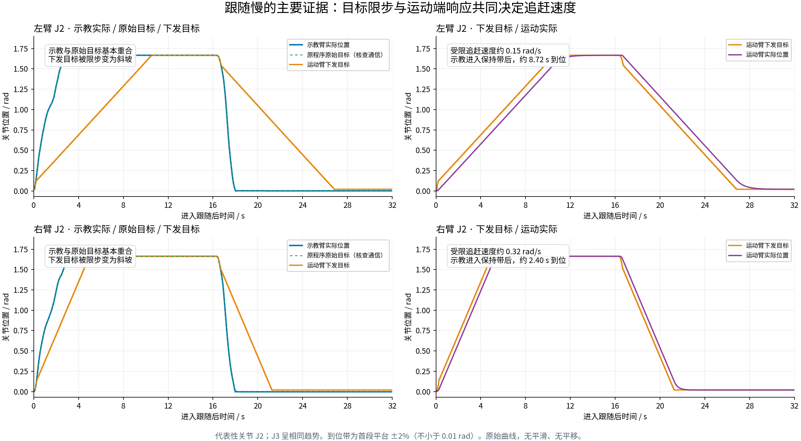
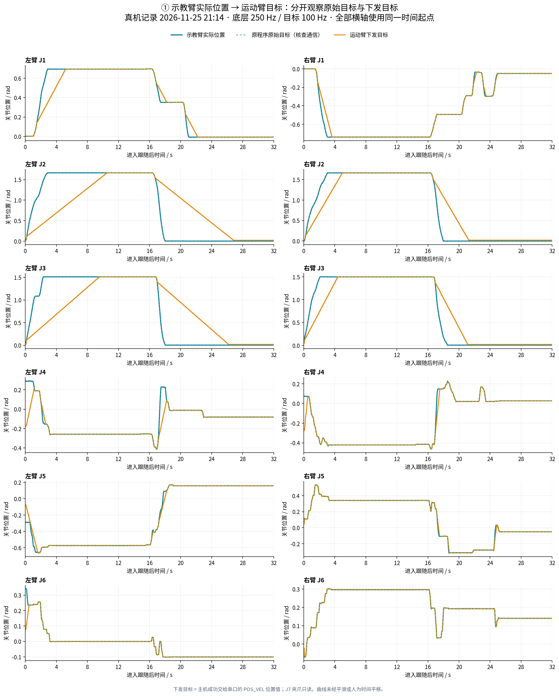
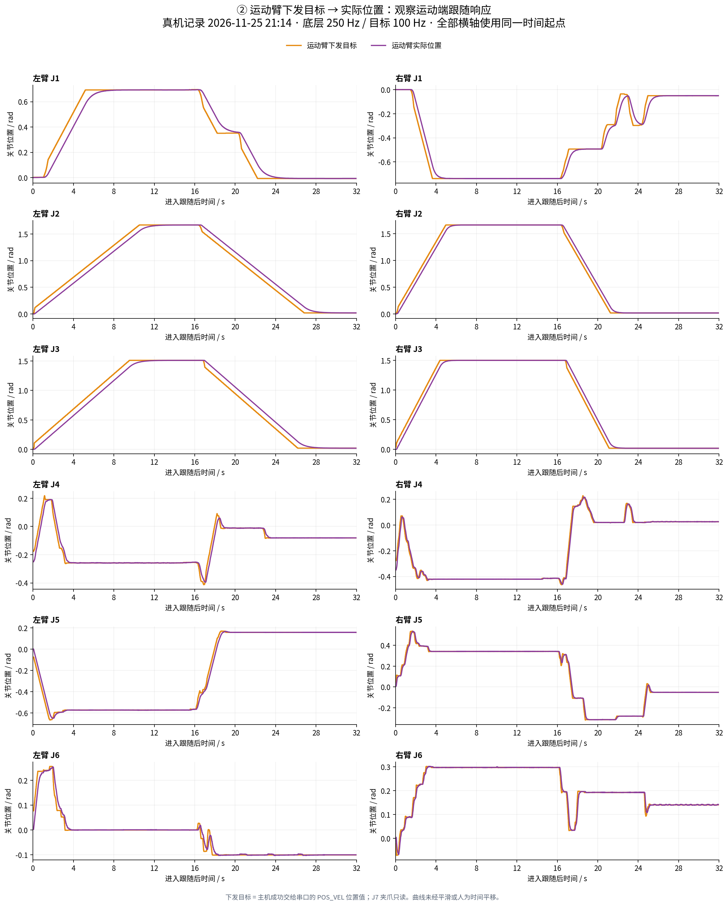

真机会话 teaching_394b0c668f · 2026-11-25 21:14:20 起 · 约 31.96 秒 · 本次仅离线分析，没有修改程序、频率或参数。

第一组图同时显示示教实际角、原程序原始目标和最终下发目标。示教实际角与原始目标基本重合；原始目标到下发目标的大差距来自目标处理。第二组图使用底层实际交给串口的目标对比运动臂实际角，直接观察执行端响应。
原版 apply_safety() 对前三轴设置 min(0.35, 7.5 / 100 × 1.5) = 0.1125 rad 的超前量，后三轴为 0.075 rad，参考量是运动臂当前反馈。因而运动臂慢，下一次目标也随它缓慢前进；它没有直接收到完整的示教阶跃。
四臂各记录 7,977 个原生周期，累计计数对应约 250 Hz；队列丢弃、周期缺失和新增超过 6 ms 的周期均为 0。每侧 raw/safe 各 3,191 条，上位机目标约 99.89 Hz。
| 臂 | 主机侧链路 | 中位 / ms | P95 / ms | 变化目标匹配数 |
|---|---|---|---|---|
| 左臂 | 示教快照 → 原始目标发布 | 3.58 | 3.78 | 1453/1453 |
| 左臂 | 限步目标发布 → 底层串口接受 | 2.23 | 4.16 | 2401/2401 |
| 右臂 | 示教快照 → 原始目标发布 | 1.68 | 3.24 | 1716/1716 |
| 右臂 | 限步目标发布 → 底层串口接受 | 2.16 | 4.17 | 1848/1848 |
仅对变化的六轴目标向量做时间匹配；相同量化值可能重复，因此示教源年龄是近似估计。时间精度受 4 ms 原生采样与 10 ms 目标周期限制。这些数值不是 CAN ACK、物理往返时间或电机采样时刻，不能声称通信延迟为零；但不支持以通信解释本次持续数秒的追赶。
| 关节 | 受限追赶速度中位 / rad·s⁻¹ | 目标−实际误差中位 / rad | 示教进入保持带后到位 / s | 首段保持末期误差 / rad |
|---|---|---|---|---|
| 左臂 J2 | 0.149 | 0.111 | 8.72 | 0.0011 |
| 左臂 J3 | 0.149 | 0.111 | 8.25 | 0.0004 |
| 右臂 J2 | 0.320 | 0.109 | 2.40 | 0.0000 |
| 右臂 J3 | 0.320 | 0.109 | 2.81 | 0.0008 |
首段长保持在约 3～16 秒；到位带为 ±max(0.01 rad, 2%首段平台幅值)，须持续保持到该段结束。上述到位耗时包含限步形成的目标斜坡，不能当作固定目标阶跃的电机固有稳定时间。相近约 0.11 rad 误差下，左 J2/J3 约 0.15 rad/s，右约 0.32 rad/s，右侧约快一倍；保持足够时间后误差很小，主要表现为追赶缓慢，未见持续明显振荡。
20:58 的已授权只读扫描显示：左运动臂 J1～J6 的 KP_APR=54，右侧=120；相应位置积分和速度环参数相同。这与左右响应差异方向一致，是优先复核位置环的依据；多轴负载和限步耦合仍存在，不能认定某个增益是唯一原因，更不能直接确定新参数。
下载图 1 PNG · 图 1 SVG · 下载图 2 PNG · 图 2 SVG


本次包含初始移动、长保持和返回。自动单阶跃报告因没有初始静止段或有再次移动而拒绝给出统一阶跃拟合；本次分析选取首段保持进行比较。原报告每轴的一个初始对齐空值来自数据流起始相位，并不是原生周期缺失。J2/J3 返回时下发目标最低约 0.02 rad，来自关节下限加原版 limit_margin；不要把示教 0 与实际约 0.02 的差距当成电机静差。夹爪只读，不作位置闭环评价。
建议：暂不继续提频。优先检查运动臂位置闭环，重点是左 J2/J3；同时把原版限步的影响纳入后续调参验证。本轮先给结论，不修改增益或限步。
完整指标：analysis.json · 逐轴指标 CSV · 链路指标 CSV · 来源 SHA256 · 可复现分析脚本。绘图采用各流原始主机时间戳，无平滑、无为了重合而移动曲线。